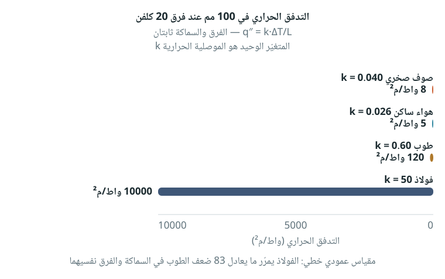

قانون فورييه للتوصيل
قانون فورييه يربط التدفق الحراري بتدرّج الحرارة في المادة: q″ = −k·dT/dx، فالتدفق يتناسب طردًا مع الموصلية والتدرّج. في جدار 100 مم بموصلية 0.60 وفرق 20 كلفن يمر 120 واط/م².
التوصيل نقل حرارة داخل المادة بلا انتقال كتلة: في المعادن تحمل الإلكترونات الحرة الطاقة، وفي العوازل تنقلها اهتزازات الشبكة. والمعدل يتحدد بثلاثة عوامل: الموصلية ومساحة المقطع والتدرّج الحراري. لجدار طوب 100 مم بفرق 20 كلفن يكون q″ = 0.60×20/0.10 = 120 واط/م²، ولو كانت المادة فولاذًا (k = 50) لكان التدفق 10000 واط/م² في الشروط نفسها، ولو كانت هواءً ساكنًا (k = 0.026) لهبط إلى 5.2 واط/م². هذا التسلسل نفسه هو أساس تصنيف المواد إلى عوازل وموصلات، وأساس اختيار مادة كل طبقة في جدار أو مبادل.
كيف تعمل الظاهرة؟
تُنقل الطاقة داخل المادة من الموضع الأسخن إلى الأبرد لأن الجزيئات الأسرع في المنطقة الساخنة تصطدم بالأبطأ وتنقل إليها طاقة، ويعود الوضع إلى التساوي لولا استمرار التسخين. وتُكتب الموازنة على حجم صغير: ما يدخل بوجه يخرج بالوجه المقابل ويتراكم الباقي، ومنها تخرج معادلة الحرارة ∂T/∂t = α∇²T. فالقانون ليس افتراضًا مستقلًّا بل نتيجة مباشرة لقانون حفظ الطاقة مع علاقة خطية بين التدفق والتدرّج، وهي علاقة تقريبية تنجح لأن مسار الجزيئات صغير جدًّا أمام أبعاد الجسم.
العلاقة بالأرقام
q″ = k·ΔT/L، والتدفق الكلي Φ = q″·A. الجدار: 0.60×20/0.10 = 120 واط/م². ومنه تُشتق المقاومة L/k = 0.17 م²·كلفن/واط. وفي الأنبوب الأسطواني يصير التدفق q′ = 2πk(T₁−T₂)/ln(r₂/r₁) لكل متر طول، لأن المساحة تتغيّر مع نصف القطر، ولا يصلح استخدام L/k مباشرة. وفي الهواء الساكن تكون الموصلية 0.026 واط/(م·كلفن) عند 20 °م، وهي التي تحدّ من قدرة فجوة هوائية رقيقة على العزل — ثم يأتي الحمل فيُبدّد العزل إن كانت الفجوة سميكة.
مفاهيم متقاربة
قانون فورييه ليس قانون نيوتن للتبريد: فورييه يصف التوصيل داخل المادة بتدرّج حراري داخلي، ونيوتن يصف انتقالًا سَطحيًّا بين سطح ومائع بمعامل h. وليس كذلك قانون ستيفان–بولتزمان الذي يعتمد على الأس الرابع للحرارة المطلقة لا على التدرّج. والموصلية k ليست ثابتة دائمًا: تتغيّر مع الحرارة والرطوبة والكثافة، فتصنيف مادة بعزل واحد بلا تحديد حرارة ومرجع يُخفي فروقًا تصل 20% في العوازل الليفية.
حدود التطبيق
يصلح للجريان المستقر وللمواد الصلبة والسوائل الساكنة؛ ولا يصلح وحده في الغازات عند سرعات عالية (تظهر الحرارة الناتجة عن الانضغاط)، ولا في المواد الشفافة التي تنقل الطاقة إشعاعيًّا داخليًّا. وفي العوازل المسامية تنقل البخار والحمل الداخلي حرارةً أكبر من التوصيل الصلب، فيُستعمل معامل فعلي لا k للمادة الصلبة. وعند أزمنة قصيرة (نبضات) يلزم نموذج تخلّف زمني لأن الإشارة الحرارية تنتشر بزمن محدود لا لحظيًّا.

| الكمية | القيمة | المصدر |
|---|---|---|
| موصلية الطوب الحرارية | 0.60 واط/(م·كلفن) | [1] |
| التدفق الحراري في جدار طوب 100 مم عند 20 كلفن | 120 واط/م² | [1] |
| موصلية الهواء الساكن عند 20 °م | 0.026 واط/(م·كلفن) | [2] |
| التدفق الحراري في فولاذ 100 مم عند 20 كلفن | 10000 واط/م² | [1] |
المصادر
- 1 Thermal conduction — Wikipedia. en.wikipedia.org/wiki/Thermal_conduction · اطُّلع عليه 2026-11-19
- 2 Air - Thermal Conductivity — The Engineering ToolBox. www.engineeringtoolbox.com/air-properties-viscosity-conductivity-heat-capacity-d_1509.html · اطُّلع عليه 2026-11-19
- 3 Fourier's law — Wikipedia. en.wikipedia.org/wiki/Thermal_conduction#Fourier's_law · اطُّلع عليه 2026-11-19
استشهد بهذا المصطلح
الصيغتان مبنيتان من بيانات الصفحة نفسها: العنوان والتاريخ ورابط النسخة المنشورة.
قانون فورييه للتوصيل. (2026). ديوان المعرفة — انفراد. https://infiradev.com/diwan/terms/fourier-law.html
@misc{fourier-law2026,
title = {قانون فورييه للتوصيل},
howpublished = {{ديوان المعرفة — انفراد} — مرجع علمي عربي},
year = {2026},
url = {https://infiradev.com/diwan/terms/fourier-law.html},
urldate = {2026-11-19},
note = {مراجعة علمية: عبدالله الهويدي — مراجعة في تطبيق انفراد}
}
راجعه: عبدالله الهويدي — مراجعة في تطبيق انفراد · 2026-11-19 · آخر تحديث 2026-11-19